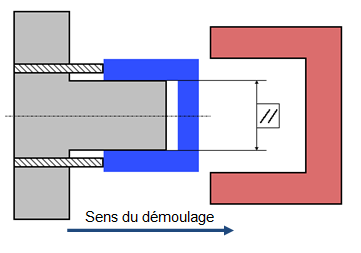
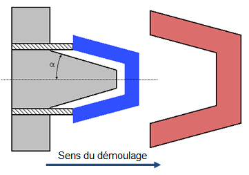
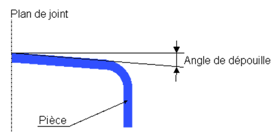
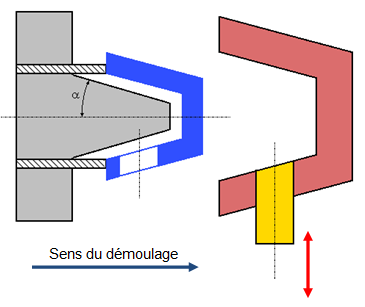
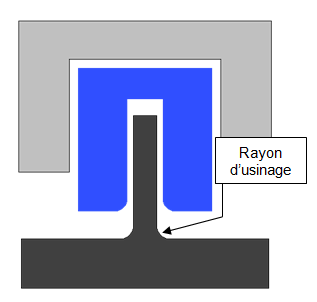

|
|
|
|
| Le
moule - Fonction mise en forme |
|
|
|
|
|
|
|
|
1. |
Notion
de dépouille et contre-dépouille
|
|
|
|
Les formes de
la pièce, sa disposition dans l’outillage,
imposent la création de dépouilles
nécessaires au démoulage correcte de la
pièce.
Dans certains cas, le démoulage ne se fait pas naturellement
et des contre-dépouilles sont nécessaires (cales
montantes, tiroirs, coulisses, …).
|
|
|
1.1. |
Forme
non dépouillée
|
|
|
Le
démoulage est difficile, voir impossible car il y a un
frottement important entre les formes moulantes de
l’empreinte et la matière solidifiée.
Ces frottements sont dus essentiellement au retrait de la
matière lors de son refroidissement dans
l’empreinte.
La surface de contact de la pièce est importante pendant
toute la phase de démoulage. |
 |
|
|
|
|
|
Mettre des
angles de dépouilles facilite le démoulage de
l’empreinte.
En général les angles de dépouille
intérieure sont plus importants que les angles de
dépouilles extérieures.
La surface de contact de la pièce est quasi nulle pendant la
phase de démoulage. |
 |
 |
|
|
|
1.3. |
Forme
en contre-dépouille
|
|
|
Pour se
démouler de l’outillage, une pièce en
plastique ne doit pas avoir d’éléments
qui viennent latéralement empêcher son
démoulage naturel.
Si néanmoins, il y a des formes comprenant des
contre-dépouilles, il faudra incorporer des
éléments mécaniques pour favoriser le
démoulage (cales montantes, tiroirs, coulisses,
…).
|
 |
|
|
|
|
|
|
En effet,
comme pratiquement tous les corps, la matière plastique se
dilate par élévation de température.
Lors du refroidissement les pièces plastiques subissent donc
logiquement un retrait (réduction de dimension).
La pièce subir un premier retrait lors du refroidissement
dans le moule.
La diminution de volume de la pièce moulée n'est
pas encore terminée.
Le retrait se poursuit
dans le temps et tend vers une valeur "définitive" d'autant
plus vite atteinte que la
température de stockage est élevée
(post-retrait).
En plasturgie, en général, les thermoplastiques
présentent au refroidissement un retrait
différent pour chaque type de matière plastique.
|
|
|
|
|
Il existe
aussi en injection plastique un retrait dit différentiel
(suivant 2 axes) qui provoque des déformations
(gauchissement ou voilage).
Le retrait de moulage est indiqué en %, on obtient les
relations suivantes :
- Retrait au Moulage : RM= (Mf-L)/L ∙100
- Post-Retrait : PR= (L-L1)/L ∙100
- Retrait Total : RT= PR+RM
|
|
|
3. |
Les
rayons d’usinage (congés)
|
|
|
Les rayons
d’usinage, ne sont pas indispensables en moulage par
injection.
Il est recommandé d’y avoir recours pour
différentes raisons.
Ainsi, en éliminant les angles vifs on améliore
l’écoulement du plastique, mais aussi la
résistance
de la pièce.
Le plastique qui remplit l’empreinte du moule
s’écoule mieux lorsque les angles sont arrondis.
Le plastique suit le chemin où il rencontre le moins de
résistance afin de minimiser les contraintes
exercées sur
le matériau et sur le moule.
Comme les dépouilles, les rayons d’usinage
facilitent
l’éjection de la pièce, car les angles
arrondis
réduisent le risque que la pièce
adhère au moule,
provoquant sa déformation, voire sa rupture.
|
 |
|
|
|
|
|
|
|
|
|
 |